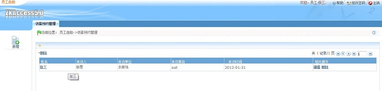
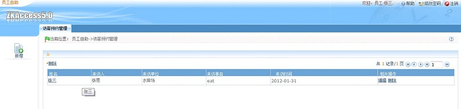

预约管理
给系统中已注册人员（既被访人） ，添加访客来访信息使用。当被访问人登入系统以后，只能看到和编辑自己的信息，被访人可将本单位本人的近期访客来访计划预先录入在系统中，方便访客登记点的工作人员预先安排接待工作。
1.被访人登录界面：
“用户名”为系统中注册人员的编号，“密码”为登录密码。

2.被访人操作界面：

给系统中已注册人员（既被访人） ，添加访客来访信息使用。当被访问人登入系统以后，只能看到和编辑自己的信息，被访人可将本单位本人的近期访客来访计划预先录入在系统中，方便访客登记点的工作人员预先安排接待工作。
1.被访人登录界面：
“用户名”为系统中注册人员的编号，“密码”为登录密码。
2.被访人操作界面：
